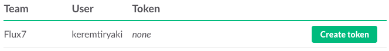
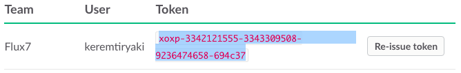

Slack private group history export helper
Please follow the instructions to get the history of private group.
-
Click
here
to get a new api token
-
Find your slack team and click 'Create token'

-
It will probably ask your password. Please enter your password to continue.
-
Copy your token and paste to token field. (It is located under the instructions.)

-
Click "Get private groups" button
-
Select the channel
-
Click "Get history" button
Token:
Channels: